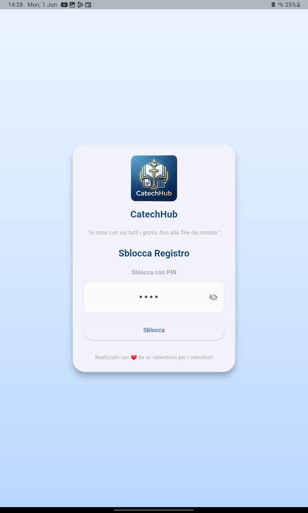
Login protetto
PIN e accesso sicuro per iniziare il lavoro.
Guarda l'app mentre semplifica la gestione del catechismo, dall'accesso al registro presenze e oltre.
Questa pagina mostra le schermate reali dell'app in uso: login, home, appelli, note di contatto e condivisione QR. Un percorso visivo pensato per capire subito come funziona nel quotidiano.
Selezione di schermate più significative per mostrare il flusso operativo e le azioni principali di CatechHub.
PIN o biometria per sbloccare il dispositivo in modo semplice e protetto.
Panoramica immediata sulle prossime giornate, attività e riepiloghi del gruppo.
Organizza facilmente i ragazzi del catechismo, visualizza i dettagli e modifica i dati in pochi tocchi.
Registra le presenze velocemente e prepara la giornata con le informazioni giuste.
Annota informazioni importanti e mantieni traccia dei dialoghi con le famiglie.
Scambia dati in modo veloce e senza cloud, direttamente tra dispositivi.
Una selezione di schermate reali per mostrare la qualità visiva e il flusso dell'app.

PIN e accesso sicuro per iniziare il lavoro.
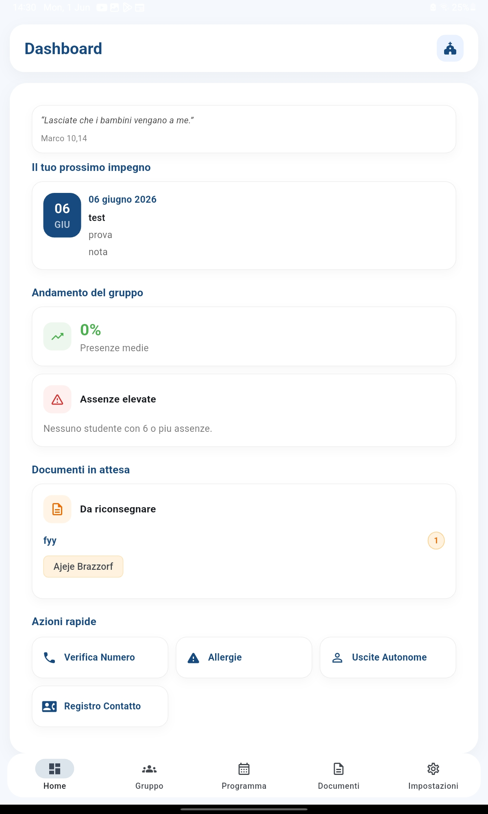
Vista iniziale con riepilogo delle attività e giornate.

Lista dei ragazzi con accesso rapido alle informazioni personali.

Scegli l'incontro giusto prima di registrare le presenze.
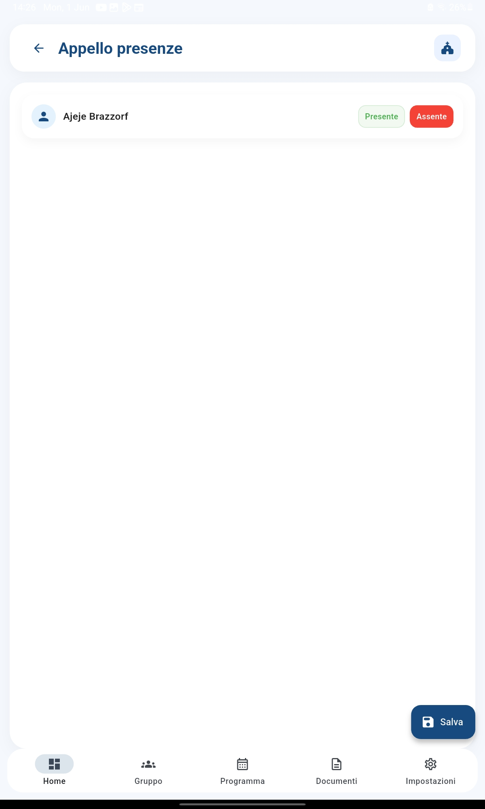
Inserimento presenze semplice e veloce.

Gestisci le allergie dei ragazzi con informazioni chiare.
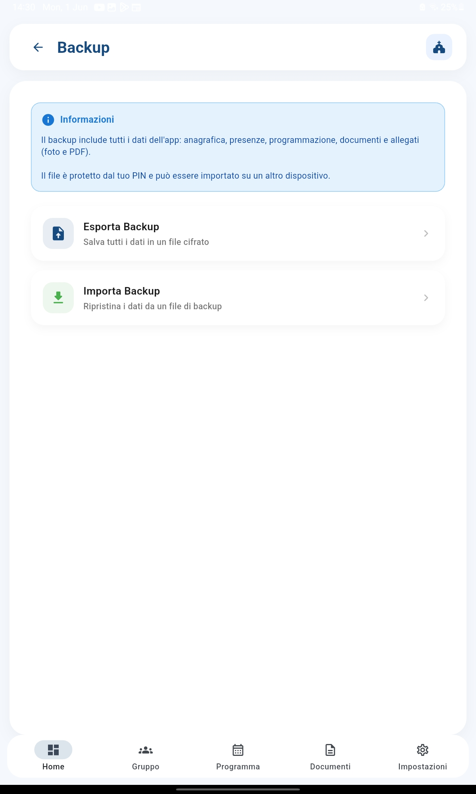
Salva e ripristina i dati in modo sicuro sul dispositivo.
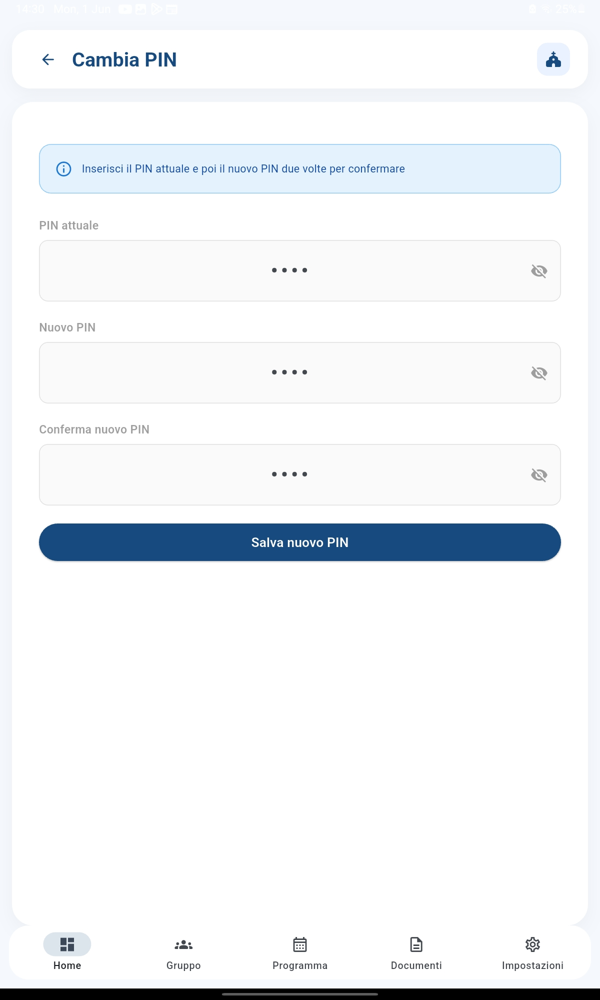
Aggiorna il codice di accesso senza perdere dati.
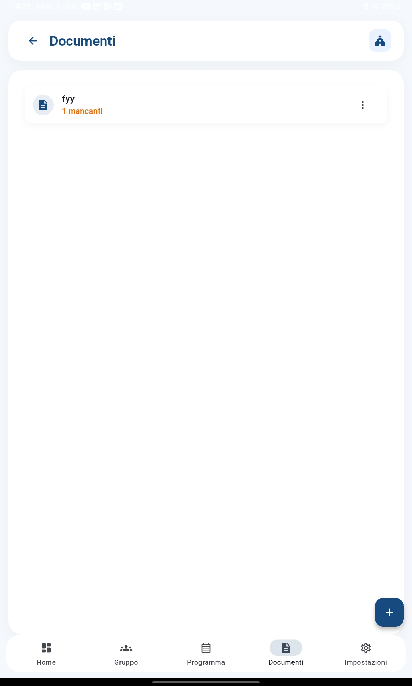
Gestisci i file e le pratiche della catechesi.

Visualizza chi deve ancora ricevere dei documenti e chi deve riportarli.
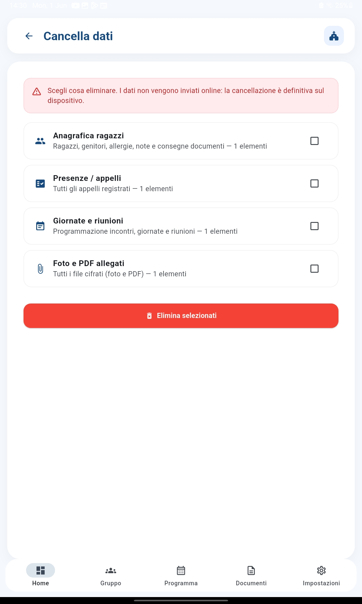
Pulisci in modo selettivo i dati salvati dall'app.
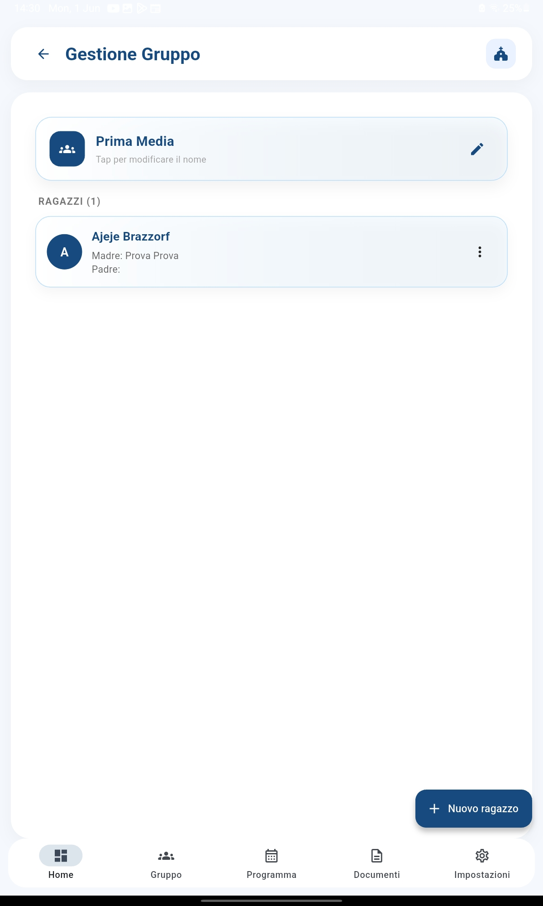
Modifica il gruppo ed aggiungi nuovi ragazzi.
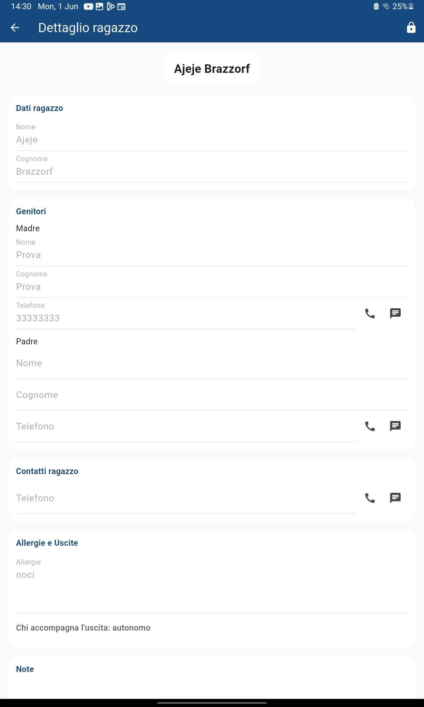
Accedi alle informazioni personali e ai contatti del ragazzo.

Consulta rapidamente i dettagli principali senza uscire dal flusso.

Organizza le giornate di catechismo e verifica i dettagli.
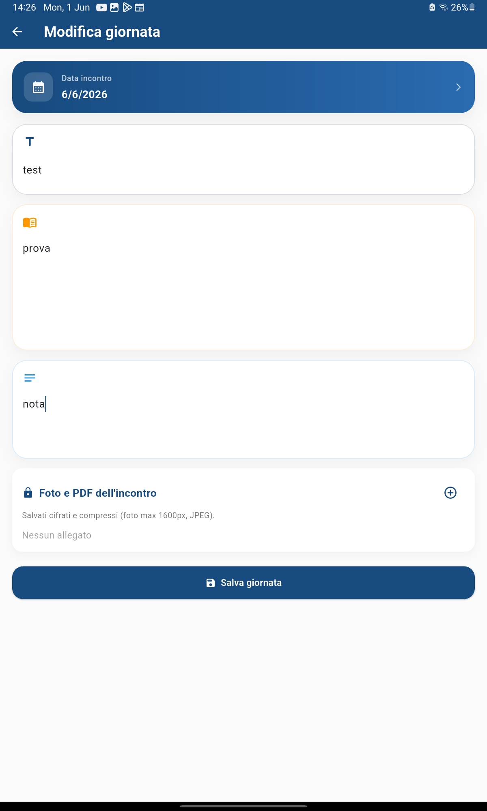
Crea rapidamente un nuovo incontro o appello.
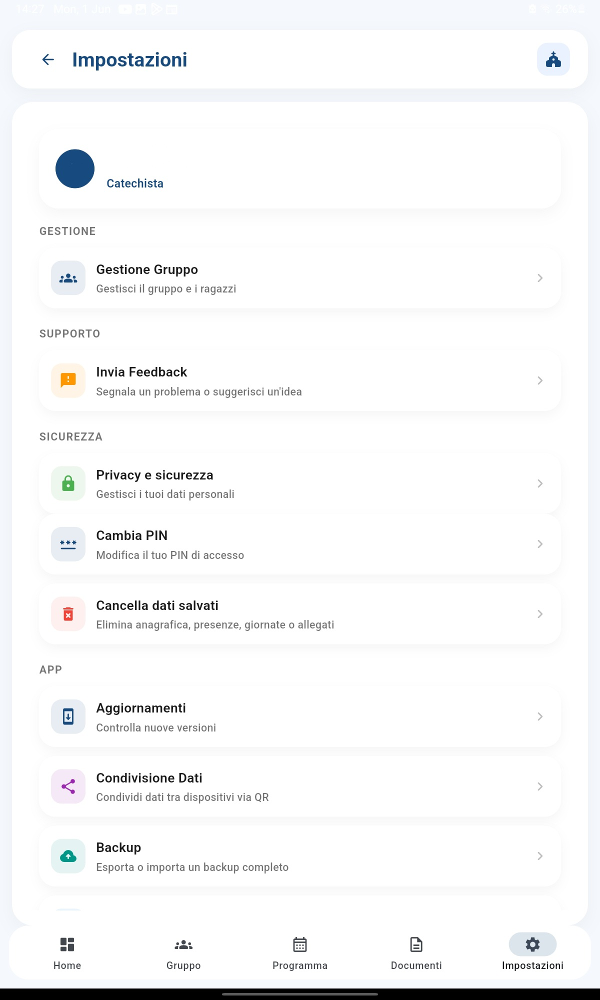
Configura privacy, accesso e preferenze dell'app.

Annota comunicazioni e informazioni delle famiglie.
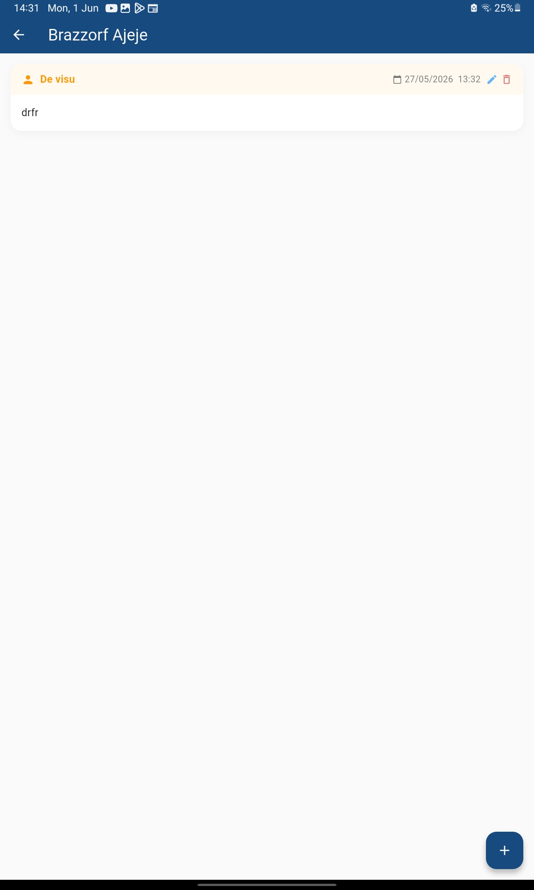
Gestisci note e commenti per ogni contatto con facilità.

Aggiungi informazioni fresche per un ragazzo o una famiglia.
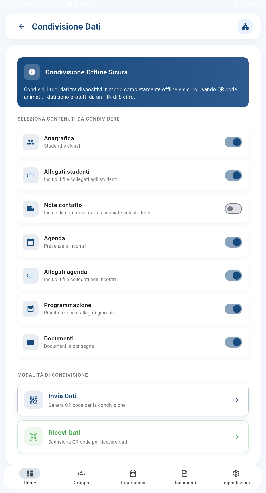
Prepara la condivisione tramite QR in modo sicuro.
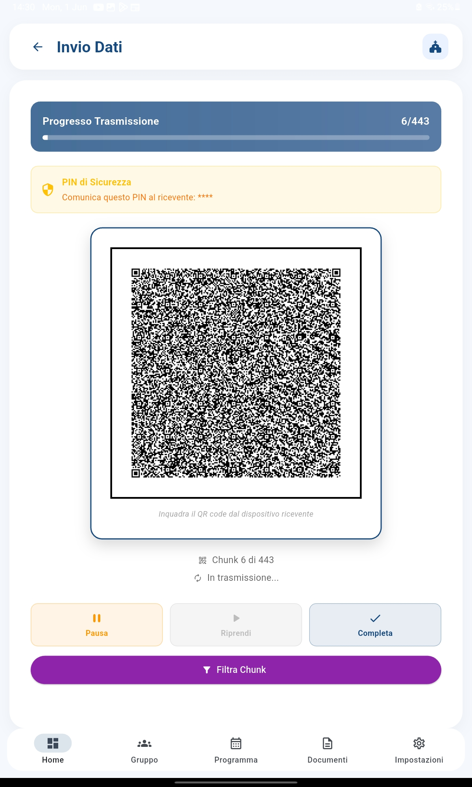
Trasmetti dati ad altri dispositivi con un semplice QR.

Usa il QR per recuperare o sincronizzare rapidamente le informazioni.

Prepara la condivisione delle informazioni in modo ordinato.

Registra le uscite autonome in modo chiaro e tracciabile.
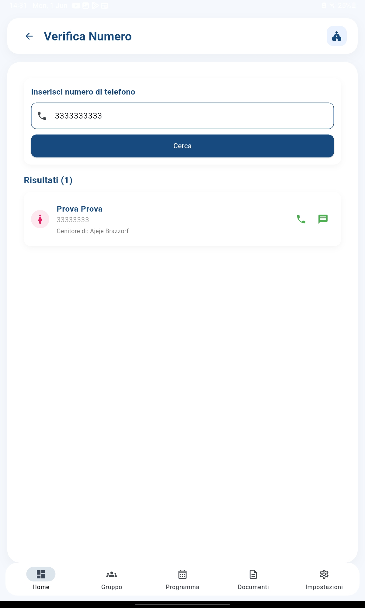
Conferma il telefono e l'identità dei contatti con facilità.
Una presentazione dell'esperienza utente per capire il valore reale dell'app.
Utilizzo immediato senza compromessi sulla sicurezza grazie a PIN e biometria.
Ideale per catechisti che vogliono meno burocrazia e più presenza reale.
Dati solo sul dispositivo e nessun trasferimento in cloud durante l'uso quotidiano.